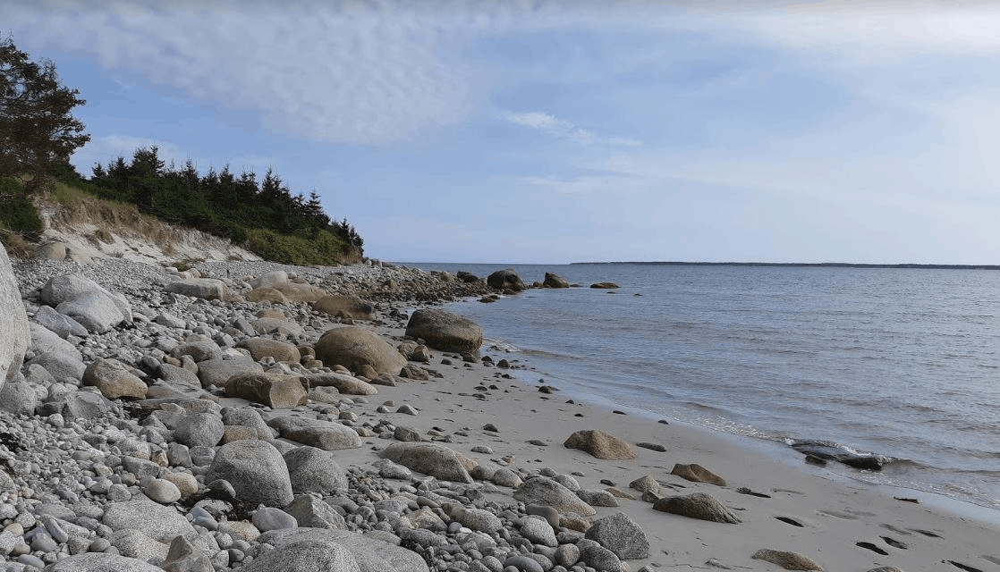
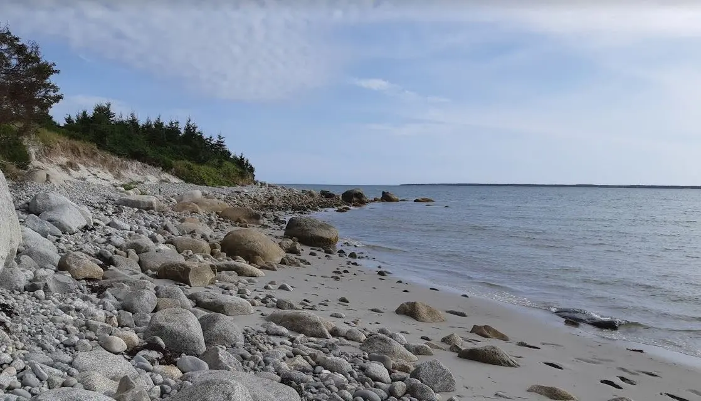

One Photo, Six Files
Same photo (1118 × 640 pixels), saved as different file types.
Can you see a difference? Check the file sizes in File Explorer.
 JPG, quality 75: about 92 KB
PNG: about 978 KB (10× bigger, and it looks the same)
JPG, quality 75: about 92 KB
PNG: about 978 KB (10× bigger, and it looks the same)

GIF, 256 colours: about 407 KB (look at the sky)

WebP, quality 75: about 91 KB
 AVIF, quality 50: about 69 KB
AVIF, quality 50: about 69 KB